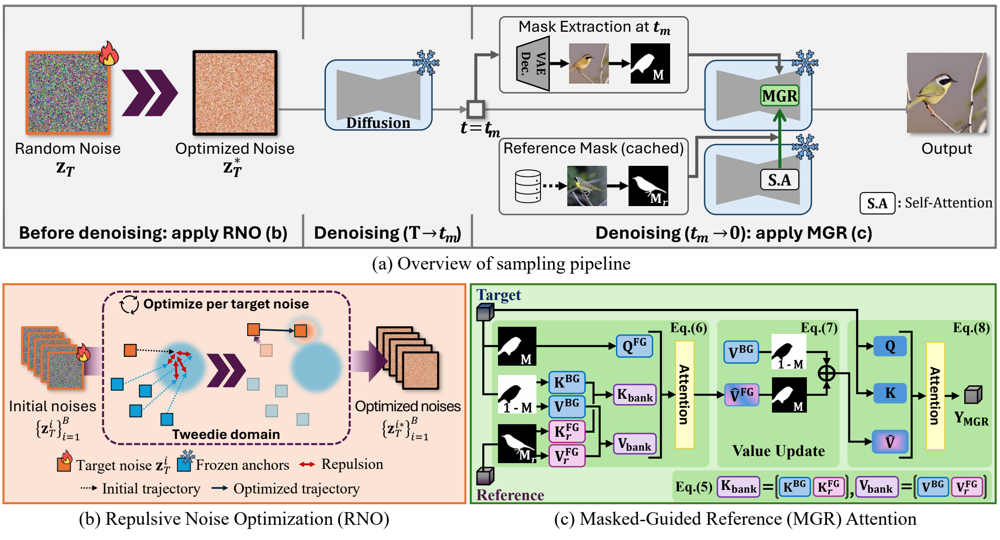

Abstract
Diffusion-based data augmentation has emerged as a powerful strategy for addressing data-scarce image classification. Recent pipelines typically adapt a pretrained text-to-image diffusion model to a limited number of class examples and subsequently sample synthetic images using diverse textual prompts. However, in extreme data-scarce regimes such as long-tailed single-sample settings, this approach suffers from a dual failure mode: the generated samples often lack discriminative foreground details crucial for classifier training, and the adapted class prior can bias the early denoising process, causing output images to exhibit similar patterns despite varying text prompts.
To overcome these limitations, we propose a sampling-side framework of two complementary components that simultaneously enhance fine details and diversity. First, Mask-Guided Reference (MGR) Attention updates only foreground value tokens with reference features via zero-shot segmentation, limiting reference influence to the target object and mitigating excessive global feature injection. Second, Repulsive Noise Optimization (RNO) encourages initial noise trajectories to diverge from dominant generative modes of the adapted model, enabling target prompts to express broader contextual variation. Extensive evaluations show consistent improvements, with the largest gains in long-tailed single-sample settings of up to 2.50 and 2.94 points on CUB-LT IF100, and further robustness across few-shot and background-shift evaluations.
Method
Both components act at sampling time on top of an already-adapted Stable Diffusion v1.5 model. Neither one touches the model weights, so they drop into an existing augmentation pipeline without retraining.
Keep the reference where it belongs
Zero-shot segmentation localizes the foreground of the target image, and only the foreground value tokens are updated with reference features. Confining the reference to the object recovers the discriminative detail a classifier needs, without the global feature bleed that washes out the background.
Push the noise off the dominant mode
Before denoising starts, each initial noise is optimized with a repulsion-only objective against frozen anchors drawn from the adaptation prompt. Trajectories spread away from the adapted model's dominant modes, so varying the text prompt actually varies the output.
Results
Gains are consistent across settings and largest where data is scarcest. The paper additionally reports few-shot and background-shift evaluations, along with ablations isolating each component. Full tables are in the paper.
BibTeX
@inproceedings{oh2027improving,
title = {Improving Diffusion-Based Augmentation for Data-Scarce Image
Classification via Mask-Guided Reference Attention and
Repulsive Noise Optimization},
author = {Oh, Hyun-Jic and Koh, GaYeon and Jeong, Won-Ki},
booktitle = {Proceedings of the IEEE/CVF Winter Conference on Applications
of Computer Vision (WACV)},
year = {2027}
}